고객 데이터 분석 프로젝트
고객 데이터 분석
데이터 출처 : UCI Machine Learning Repository
[링크주소 및 다운로드]https://archive.ics.uci.edu/ml/datasets/bank+marketing
Moro, S., Cortez, P., & Rita, P. (2014). A data-driven approach to predict the success of bank telemarketing. Decision Support Systems, 62, 22-31
<데이터 소개="">
- 해외의 은행이 진행한 마케팅 데이터
- 아웃바운드 텔레마케팅으로 마케팅 캠페인을 진행
bank client data:
1 - age (numeric)
2 - job : type of job (categorical: ‘admin.’,’blue-collar’,’entrepreneur’,’housemaid’,’management’,’retired’,’self-employed’,’services’,’student’,’technician’,’unemployed’,’unknown’)
3 - marital : marital status (categorical: ‘divorced’,’married’,’single’,’unknown’; note: ‘divorced’ means divorced or widowed)
4 - education (categorical: ‘basic.4y’,’basic.6y’,’basic.9y’,’high.school’,’illiterate’,’professional.course’,’university.degree’,’unknown’)
5 - default: has credit in default? (categorical: ‘no’,’yes’,’unknown’)
6 - housing: has housing loan? (categorical: ‘no’,’yes’,’unknown’)
7 - loan: has personal loan? (categorical: ‘no’,’yes’,’unknown’)
related with the last contact of the current campaign:
8 - contact: contact communication type (categorical: ‘cellular’,’telephone’)
9 - month: last contact month of year (categorical: ‘jan’, ‘feb’, ‘mar’, …, ‘nov’, ‘dec’)
10 - day_of_week: last contact day of the week (categorical: ‘mon’,’tue’,’wed’,’thu’,’fri’)
11 - duration: last contact duration, in seconds (numeric).
other attributes:
12 - campaign: number of contacts performed during this campaign and for this client (numeric, includes last contact)
13 - pdays: number of days that passed by after the client was last contacted from a previous campaign (numeric; 999 means client was not previously contacted)
14 - previous: number of contacts performed before this campaign and for this client (numeric)
15 - poutcome: outcome of the previous marketing campaign (categorical: ‘failure’,’nonexistent’,’success’)
social and economic context attributes
16 - emp.var.rate: employment variation rate - quarterly indicator (numeric)
17 - cons.price.idx: consumer price index - monthly indicator (numeric)
18 - cons.conf.idx: consumer confidence index - monthly indicator (numeric)
19 - euribor3m: euribor 3 month rate - daily indicator (numeric)
20 - nr.employed: number of employees - quarterly indicator (numeric)
Output variable:
21 - y - has the client subscribed a term deposit? (binary: ‘yes’,’no’)
import pandas as pd
from pandas import Series
from pandas import DataFrame
import matplotlib.pyplot as plt
# matplotlib 한글 폰트 출력코드
# 출처 : 데이터공방( https://kiddwannabe.blog.me)
import matplotlib
from matplotlib import font_manager, rc
import platform
try :
if platform.system() == 'Windows':
# 윈도우인 경우
font_name = font_manager.FontProperties(fname="c:/Windows/Fonts/malgun.ttf").get_name()
rc('font', family=font_name)
else:
# Mac 인 경우
rc('font', family='AppleGothic')
except :
pass
matplotlib.rcParams['axes.unicode_minus'] = False
데이터불러오기
파일명 : bank-additional-full.csv
#window 방법1 : \\
#engine='python' - 에러 반환시, 디렉토리 혹은 파일명에 한글이 있을 경우 추가
df=pd.read_csv('bankadditionalfull.csv')
#head()
df.head()
| age;"job";"marital";"education";"default";"housing";"loan";"contact";"month";"day_of_week";"duration";"campaign";"pdays";"previous";"poutcome";"emp.var.rate";"cons.price.idx";"cons.conf.idx";"euribor3m";"nr.employed";"y" | |
|---|---|
| 0 | 56;"housemaid";"married";"basic.4y";"no";"no";... |
| 1 | 57;"services";"married";"high.school";"unknown... |
| 2 | 37;"services";"married";"high.school";"no";"ye... |
| 3 | 40;"admin.";"married";"basic.6y";"no";"no";"no... |
| 4 | 56;"services";"married";"high.school";"no";"no... |
- 엑셀로 데이터를 열었을 때의 화면
- 콜론으로 구분된 데이터
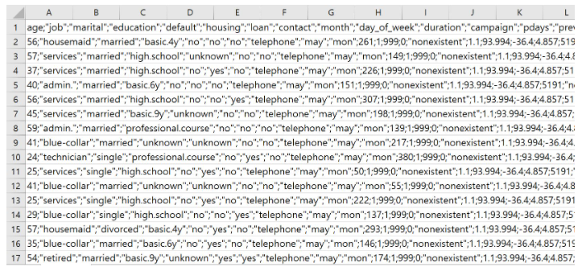
#window
#sep = ';'
df=pd.read_csv('bankadditionalfull.csv',
engine='python',sep=';')
df.head()
| age | job | marital | education | default | housing | loan | contact | month | day_of_week | ... | campaign | pdays | previous | poutcome | emp.var.rate | cons.price.idx | cons.conf.idx | euribor3m | nr.employed | y | |
|---|---|---|---|---|---|---|---|---|---|---|---|---|---|---|---|---|---|---|---|---|---|
| 0 | 56 | housemaid | married | basic.4y | no | no | no | telephone | may | mon | ... | 1 | 999 | 0 | nonexistent | 1.1 | 93.994 | -36.4 | 4.857 | 5191.0 | no |
| 1 | 57 | services | married | high.school | unknown | no | no | telephone | may | mon | ... | 1 | 999 | 0 | nonexistent | 1.1 | 93.994 | -36.4 | 4.857 | 5191.0 | no |
| 2 | 37 | services | married | high.school | no | yes | no | telephone | may | mon | ... | 1 | 999 | 0 | nonexistent | 1.1 | 93.994 | -36.4 | 4.857 | 5191.0 | no |
| 3 | 40 | admin. | married | basic.6y | no | no | no | telephone | may | mon | ... | 1 | 999 | 0 | nonexistent | 1.1 | 93.994 | -36.4 | 4.857 | 5191.0 | no |
| 4 | 56 | services | married | high.school | no | no | yes | telephone | may | mon | ... | 1 | 999 | 0 | nonexistent | 1.1 | 93.994 | -36.4 | 4.857 | 5191.0 | no |
5 rows × 21 columns
# 데이터탐색
- 학습목표 :
- 데이터 탐색과정에서 사용되는 함수를 살펴보고 실전 사례를 통해 사용법을 익힌다.
#head - 데이터의 첫 5행, default : 5행
df.head()
| age | job | marital | education | default | housing | loan | contact | month | day_of_week | ... | campaign | pdays | previous | poutcome | emp.var.rate | cons.price.idx | cons.conf.idx | euribor3m | nr.employed | y | |
|---|---|---|---|---|---|---|---|---|---|---|---|---|---|---|---|---|---|---|---|---|---|
| 0 | 56 | housemaid | married | basic.4y | no | no | no | telephone | may | mon | ... | 1 | 999 | 0 | nonexistent | 1.1 | 93.994 | -36.4 | 4.857 | 5191.0 | no |
| 1 | 57 | services | married | high.school | unknown | no | no | telephone | may | mon | ... | 1 | 999 | 0 | nonexistent | 1.1 | 93.994 | -36.4 | 4.857 | 5191.0 | no |
| 2 | 37 | services | married | high.school | no | yes | no | telephone | may | mon | ... | 1 | 999 | 0 | nonexistent | 1.1 | 93.994 | -36.4 | 4.857 | 5191.0 | no |
| 3 | 40 | admin. | married | basic.6y | no | no | no | telephone | may | mon | ... | 1 | 999 | 0 | nonexistent | 1.1 | 93.994 | -36.4 | 4.857 | 5191.0 | no |
| 4 | 56 | services | married | high.school | no | no | yes | telephone | may | mon | ... | 1 | 999 | 0 | nonexistent | 1.1 | 93.994 | -36.4 | 4.857 | 5191.0 | no |
5 rows × 21 columns
df.head(10)
| age | job | marital | education | default | housing | loan | contact | month | day_of_week | ... | campaign | pdays | previous | poutcome | emp.var.rate | cons.price.idx | cons.conf.idx | euribor3m | nr.employed | y | |
|---|---|---|---|---|---|---|---|---|---|---|---|---|---|---|---|---|---|---|---|---|---|
| 0 | 56 | housemaid | married | basic.4y | no | no | no | telephone | may | mon | ... | 1 | 999 | 0 | nonexistent | 1.1 | 93.994 | -36.4 | 4.857 | 5191.0 | no |
| 1 | 57 | services | married | high.school | unknown | no | no | telephone | may | mon | ... | 1 | 999 | 0 | nonexistent | 1.1 | 93.994 | -36.4 | 4.857 | 5191.0 | no |
| 2 | 37 | services | married | high.school | no | yes | no | telephone | may | mon | ... | 1 | 999 | 0 | nonexistent | 1.1 | 93.994 | -36.4 | 4.857 | 5191.0 | no |
| 3 | 40 | admin. | married | basic.6y | no | no | no | telephone | may | mon | ... | 1 | 999 | 0 | nonexistent | 1.1 | 93.994 | -36.4 | 4.857 | 5191.0 | no |
| 4 | 56 | services | married | high.school | no | no | yes | telephone | may | mon | ... | 1 | 999 | 0 | nonexistent | 1.1 | 93.994 | -36.4 | 4.857 | 5191.0 | no |
| 5 | 45 | services | married | basic.9y | unknown | no | no | telephone | may | mon | ... | 1 | 999 | 0 | nonexistent | 1.1 | 93.994 | -36.4 | 4.857 | 5191.0 | no |
| 6 | 59 | admin. | married | professional.course | no | no | no | telephone | may | mon | ... | 1 | 999 | 0 | nonexistent | 1.1 | 93.994 | -36.4 | 4.857 | 5191.0 | no |
| 7 | 41 | blue-collar | married | unknown | unknown | no | no | telephone | may | mon | ... | 1 | 999 | 0 | nonexistent | 1.1 | 93.994 | -36.4 | 4.857 | 5191.0 | no |
| 8 | 24 | technician | single | professional.course | no | yes | no | telephone | may | mon | ... | 1 | 999 | 0 | nonexistent | 1.1 | 93.994 | -36.4 | 4.857 | 5191.0 | no |
| 9 | 25 | services | single | high.school | no | yes | no | telephone | may | mon | ... | 1 | 999 | 0 | nonexistent | 1.1 | 93.994 | -36.4 | 4.857 | 5191.0 | no |
10 rows × 21 columns
#tail - 데이터의 끝 5행, default : 5행
df.tail()
| age | job | marital | education | default | housing | loan | contact | month | day_of_week | ... | campaign | pdays | previous | poutcome | emp.var.rate | cons.price.idx | cons.conf.idx | euribor3m | nr.employed | y | |
|---|---|---|---|---|---|---|---|---|---|---|---|---|---|---|---|---|---|---|---|---|---|
| 41183 | 73 | retired | married | professional.course | no | yes | no | cellular | nov | fri | ... | 1 | 999 | 0 | nonexistent | -1.1 | 94.767 | -50.8 | 1.028 | 4963.6 | yes |
| 41184 | 46 | blue-collar | married | professional.course | no | no | no | cellular | nov | fri | ... | 1 | 999 | 0 | nonexistent | -1.1 | 94.767 | -50.8 | 1.028 | 4963.6 | no |
| 41185 | 56 | retired | married | university.degree | no | yes | no | cellular | nov | fri | ... | 2 | 999 | 0 | nonexistent | -1.1 | 94.767 | -50.8 | 1.028 | 4963.6 | no |
| 41186 | 44 | technician | married | professional.course | no | no | no | cellular | nov | fri | ... | 1 | 999 | 0 | nonexistent | -1.1 | 94.767 | -50.8 | 1.028 | 4963.6 | yes |
| 41187 | 74 | retired | married | professional.course | no | yes | no | cellular | nov | fri | ... | 3 | 999 | 1 | failure | -1.1 | 94.767 | -50.8 | 1.028 | 4963.6 | no |
5 rows × 21 columns
df.tail(10)
| age | job | marital | education | default | housing | loan | contact | month | day_of_week | ... | campaign | pdays | previous | poutcome | emp.var.rate | cons.price.idx | cons.conf.idx | euribor3m | nr.employed | y | |
|---|---|---|---|---|---|---|---|---|---|---|---|---|---|---|---|---|---|---|---|---|---|
| 41178 | 62 | retired | married | university.degree | no | no | no | cellular | nov | thu | ... | 2 | 6 | 3 | success | -1.1 | 94.767 | -50.8 | 1.031 | 4963.6 | yes |
| 41179 | 64 | retired | divorced | professional.course | no | yes | no | cellular | nov | fri | ... | 3 | 999 | 0 | nonexistent | -1.1 | 94.767 | -50.8 | 1.028 | 4963.6 | no |
| 41180 | 36 | admin. | married | university.degree | no | no | no | cellular | nov | fri | ... | 2 | 999 | 0 | nonexistent | -1.1 | 94.767 | -50.8 | 1.028 | 4963.6 | no |
| 41181 | 37 | admin. | married | university.degree | no | yes | no | cellular | nov | fri | ... | 1 | 999 | 0 | nonexistent | -1.1 | 94.767 | -50.8 | 1.028 | 4963.6 | yes |
| 41182 | 29 | unemployed | single | basic.4y | no | yes | no | cellular | nov | fri | ... | 1 | 9 | 1 | success | -1.1 | 94.767 | -50.8 | 1.028 | 4963.6 | no |
| 41183 | 73 | retired | married | professional.course | no | yes | no | cellular | nov | fri | ... | 1 | 999 | 0 | nonexistent | -1.1 | 94.767 | -50.8 | 1.028 | 4963.6 | yes |
| 41184 | 46 | blue-collar | married | professional.course | no | no | no | cellular | nov | fri | ... | 1 | 999 | 0 | nonexistent | -1.1 | 94.767 | -50.8 | 1.028 | 4963.6 | no |
| 41185 | 56 | retired | married | university.degree | no | yes | no | cellular | nov | fri | ... | 2 | 999 | 0 | nonexistent | -1.1 | 94.767 | -50.8 | 1.028 | 4963.6 | no |
| 41186 | 44 | technician | married | professional.course | no | no | no | cellular | nov | fri | ... | 1 | 999 | 0 | nonexistent | -1.1 | 94.767 | -50.8 | 1.028 | 4963.6 | yes |
| 41187 | 74 | retired | married | professional.course | no | yes | no | cellular | nov | fri | ... | 3 | 999 | 1 | failure | -1.1 | 94.767 | -50.8 | 1.028 | 4963.6 | no |
10 rows × 21 columns
결측치 확인
# 결측치 확인
df.isnull()
| age | job | marital | education | default | housing | loan | contact | month | day_of_week | ... | campaign | pdays | previous | poutcome | emp.var.rate | cons.price.idx | cons.conf.idx | euribor3m | nr.employed | y | |
|---|---|---|---|---|---|---|---|---|---|---|---|---|---|---|---|---|---|---|---|---|---|
| 0 | False | False | False | False | False | False | False | False | False | False | ... | False | False | False | False | False | False | False | False | False | False |
| 1 | False | False | False | False | False | False | False | False | False | False | ... | False | False | False | False | False | False | False | False | False | False |
| 2 | False | False | False | False | False | False | False | False | False | False | ... | False | False | False | False | False | False | False | False | False | False |
| 3 | False | False | False | False | False | False | False | False | False | False | ... | False | False | False | False | False | False | False | False | False | False |
| 4 | False | False | False | False | False | False | False | False | False | False | ... | False | False | False | False | False | False | False | False | False | False |
| ... | ... | ... | ... | ... | ... | ... | ... | ... | ... | ... | ... | ... | ... | ... | ... | ... | ... | ... | ... | ... | ... |
| 41183 | False | False | False | False | False | False | False | False | False | False | ... | False | False | False | False | False | False | False | False | False | False |
| 41184 | False | False | False | False | False | False | False | False | False | False | ... | False | False | False | False | False | False | False | False | False | False |
| 41185 | False | False | False | False | False | False | False | False | False | False | ... | False | False | False | False | False | False | False | False | False | False |
| 41186 | False | False | False | False | False | False | False | False | False | False | ... | False | False | False | False | False | False | False | False | False | False |
| 41187 | False | False | False | False | False | False | False | False | False | False | ... | False | False | False | False | False | False | False | False | False | False |
41188 rows × 21 columns
# 결측치 확인 - 열단위
df.isnull().sum()
age 0
job 0
marital 0
education 0
default 0
housing 0
loan 0
contact 0
month 0
day_of_week 0
duration 0
campaign 0
pdays 0
previous 0
poutcome 0
emp.var.rate 0
cons.price.idx 0
cons.conf.idx 0
euribor3m 0
nr.employed 0
y 0
dtype: int64
#shape - dataframe의 크기(행, 열의 수)
df.shape
(41188, 21)
#describe() - 열에 대한 기술통계량
#데이터의 수, 평균, 표준편차, 최소값, 1사분위수, 2사분위수, 3사분위수, 최대값
df.describe()
| age | duration | campaign | pdays | previous | emp.var.rate | cons.price.idx | cons.conf.idx | euribor3m | nr.employed | |
|---|---|---|---|---|---|---|---|---|---|---|
| count | 41188.00000 | 41188.000000 | 41188.000000 | 41188.000000 | 41188.000000 | 41188.000000 | 41188.000000 | 41188.000000 | 41188.000000 | 41188.000000 |
| mean | 40.02406 | 258.285010 | 2.567593 | 962.475454 | 0.172963 | 0.081886 | 93.575664 | -40.502600 | 3.621291 | 5167.035911 |
| std | 10.42125 | 259.279249 | 2.770014 | 186.910907 | 0.494901 | 1.570960 | 0.578840 | 4.628198 | 1.734447 | 72.251528 |
| min | 17.00000 | 0.000000 | 1.000000 | 0.000000 | 0.000000 | -3.400000 | 92.201000 | -50.800000 | 0.634000 | 4963.600000 |
| 25% | 32.00000 | 102.000000 | 1.000000 | 999.000000 | 0.000000 | -1.800000 | 93.075000 | -42.700000 | 1.344000 | 5099.100000 |
| 50% | 38.00000 | 180.000000 | 2.000000 | 999.000000 | 0.000000 | 1.100000 | 93.749000 | -41.800000 | 4.857000 | 5191.000000 |
| 75% | 47.00000 | 319.000000 | 3.000000 | 999.000000 | 0.000000 | 1.400000 | 93.994000 | -36.400000 | 4.961000 | 5228.100000 |
| max | 98.00000 | 4918.000000 | 56.000000 | 999.000000 | 7.000000 | 1.400000 | 94.767000 | -26.900000 | 5.045000 | 5228.100000 |
#columns - 칼럼명 반환
df.columns
Index(['age', 'job', 'marital', 'education', 'default', 'housing', 'loan',
'contact', 'month', 'day_of_week', 'duration', 'campaign', 'pdays',
'previous', 'poutcome', 'emp.var.rate', 'cons.price.idx',
'cons.conf.idx', 'euribor3m', 'nr.employed', 'y'],
dtype='object')
#unique() - 열의 고유값
#education
df['education'].unique()
array(['basic.4y', 'high.school', 'basic.6y', 'basic.9y',
'professional.course', 'unknown', 'university.degree',
'illiterate'], dtype=object)
#value_counts() - 열의 고유값 빈도
#education
df['education'].value_counts()
university.degree 12168
high.school 9515
basic.9y 6045
professional.course 5243
basic.4y 4176
basic.6y 2292
unknown 1731
illiterate 18
Name: education, dtype: int64
#unique() - 열의 고유값
#marital
df['marital'].unique()
array(['married', 'single', 'divorced', 'unknown'], dtype=object)
#value_counts() - 열의 고유값 빈도
#marital
df['marital'].value_counts()
married 24928
single 11568
divorced 4612
unknown 80
Name: marital, dtype: int64
데이터 시각화
- 학습목표 :
- 현업의 데이터를 사용하여 데이터 시각화를 실습한다.
- 데이터를 가공,처리하여 시각화를 진행한다.
df['age']
0 56
1 57
2 37
3 40
4 56
..
41183 73
41184 46
41185 56
41186 44
41187 74
Name: age, Length: 41188, dtype: int64
df['age'].plot()
plt.show()
#x축이 인덱스 순서
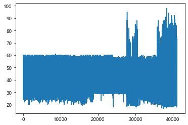
- age 칼럼 선그래프 그리기(오름차순)
- 노출수칼럼을 수치 순서대로 오름차순 정렬
- 정렬된 데이터(시리즈)의 형태대로 인덱스 재생성
#오름차순 정렬
#age칼럼
age=df['age'].sort_values()
#age변수출력
age
38274 17
37579 17
37539 17
37140 17
37558 17
..
40450 92
38921 94
27826 95
38455 98
38452 98
Name: age, Length: 41188, dtype: int64
#reset_index - 인덱스 재생성, 기존 인덱스를 데이터프레임의 열로 반환
age=age.reset_index()
#age 변수출력
age
| index | age | |
|---|---|---|
| 0 | 38274 | 17 |
| 1 | 37579 | 17 |
| 2 | 37539 | 17 |
| 3 | 37140 | 17 |
| 4 | 37558 | 17 |
| ... | ... | ... |
| 41183 | 40450 | 92 |
| 41184 | 38921 | 94 |
| 41185 | 27826 | 95 |
| 41186 | 38455 | 98 |
| 41187 | 38452 | 98 |
41188 rows × 2 columns
#drop(axis=1) - 삭제(열 기준)
age=age.drop('index',axis=1)
#age 변수출력
age
| age | |
|---|---|
| 0 | 17 |
| 1 | 17 |
| 2 | 17 |
| 3 | 17 |
| 4 | 17 |
| ... | ... |
| 41183 | 92 |
| 41184 | 94 |
| 41185 | 95 |
| 41186 | 98 |
| 41187 | 98 |
41188 rows × 1 columns
#plotting
age.plot()
plt.show()
#값의 오름차순별로 정렬한 그래프
#보통 '나이'를 20대,30대,40..대로 나누어 데이터를 확인함
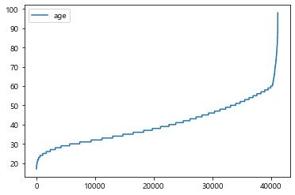
#계급간 빈도를 나타내주는 히스토그램
df['age'].plot.hist()
plt.show()
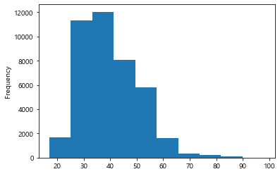
#히스토그램
#bins - 계급구간(10,20,30...100)
#figsize=[15,8]
#xticks(fontsize=15)
#yticks(fontsize=15)
#plt.title('Histogram of df.age',fontsize=20)
df['age'].plot.hist(bins=range(10,101,10),figsize=[15,8])
plt.xticks(fontsize=15)
plt.yticks(fontsize=15)
plt.title('Histogram of df.age',fontsize=20)
plt.show()
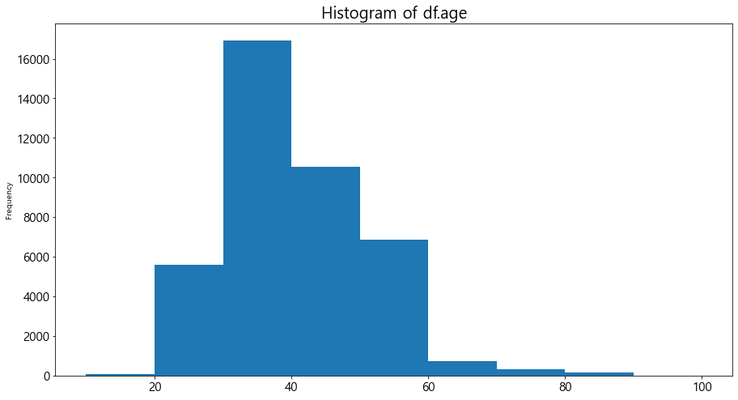
#시각화 예제2 : duration(전화통화시간) 선 그래프 시각화
(((df['duration'].sort_values()).reset_index()).drop('index',axis=1)).plot()
plt.show()
#1. 선그래프로 데이터의 패턴 분석
#2. 히스토그램으로 전화통화 시간별 빈도 분석
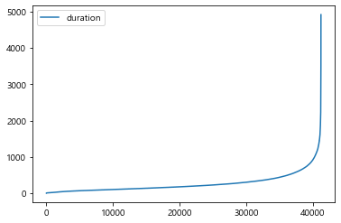
#히스토그램의 계급구간을 설정하기 위한 최소값, 최대값 파악
#describe()
df['duration'].describe()
count 41188.000000
mean 258.285010
std 259.279249
min 0.000000
25% 102.000000
50% 180.000000
75% 319.000000
max 4918.000000
Name: duration, dtype: float64
#bins=range(0,5001,100)
df['duration'].plot.hist(bins=range(0,5001,100))
plt.show()
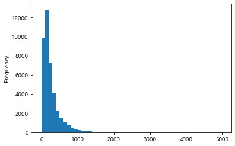
#히스토그램
#bins - 계급구간(0,100,200...5000)
#figsize=[15,8]
#xticks(fontsize=15)
#yticks(fontsize=15)
#plt.title('Histogram of df.duration',fontsize=20)
df['duration'].plot.hist(bins=range(0,5001,100), figsize=[15,8])
plt.xticks(fontsize=15)
plt.yticks(fontsize=15)
plt.title('Histogram of df.duration',fontsize=20)
plt.show()
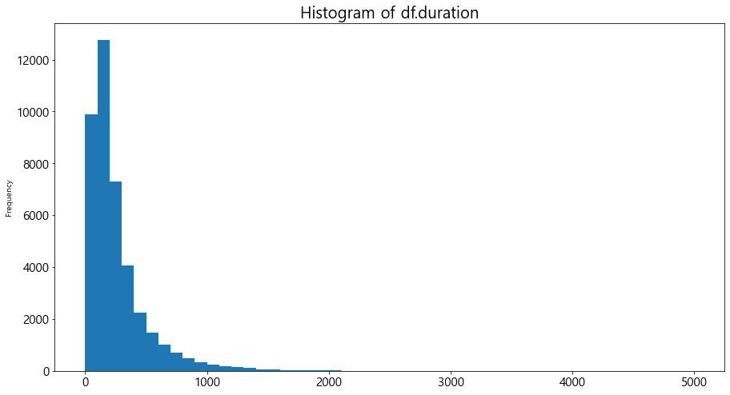
막대그래프, 가로막대그래프
#선그래프
#marital
df['marital'].plot()
plt.show()
#no numeric data to plot
---------------------------------------------------------------------------
TypeError Traceback (most recent call last)
<ipython-input-36-7df365c79815> in <module>
1 #선그래프
2 #marital
----> 3 df['marital'].plot()
4 plt.show()
5 #no numeric data to plot
~\anaconda3\lib\site-packages\pandas\plotting\_core.py in __call__(self, *args, **kwargs)
953 data.columns = label_name
954
--> 955 return plot_backend.plot(data, kind=kind, **kwargs)
956
957 __call__.__doc__ = __doc__
~\anaconda3\lib\site-packages\pandas\plotting\_matplotlib\__init__.py in plot(data, kind, **kwargs)
59 kwargs["ax"] = getattr(ax, "left_ax", ax)
60 plot_obj = PLOT_CLASSES[kind](data, **kwargs)
---> 61 plot_obj.generate()
62 plot_obj.draw()
63 return plot_obj.result
~\anaconda3\lib\site-packages\pandas\plotting\_matplotlib\core.py in generate(self)
276 def generate(self):
277 self._args_adjust()
--> 278 self._compute_plot_data()
279 self._setup_subplots()
280 self._make_plot()
~\anaconda3\lib\site-packages\pandas\plotting\_matplotlib\core.py in _compute_plot_data(self)
439 # no non-numeric frames or series allowed
440 if is_empty:
--> 441 raise TypeError("no numeric data to plot")
442
443 self.data = numeric_data.apply(self._convert_to_ndarray)
TypeError: no numeric data to plot
- 숫자데이터가 아니기 때문에 시각화 할 수 없다.
#히스토그램
df['marital'].plot.hist()
#no numeric data to plot
---------------------------------------------------------------------------
TypeError Traceback (most recent call last)
<ipython-input-38-414b9b3e32cb> in <module>
1 #히스토그램
----> 2 df['marital'].plot.hist()
3 #no numeric data to plot
~\anaconda3\lib\site-packages\pandas\plotting\_core.py in hist(self, by, bins, **kwargs)
1294 >>> ax = df.plot.hist(bins=12, alpha=0.5)
1295 """
-> 1296 return self(kind="hist", by=by, bins=bins, **kwargs)
1297
1298 def kde(self, bw_method=None, ind=None, **kwargs):
~\anaconda3\lib\site-packages\pandas\plotting\_core.py in __call__(self, *args, **kwargs)
953 data.columns = label_name
954
--> 955 return plot_backend.plot(data, kind=kind, **kwargs)
956
957 __call__.__doc__ = __doc__
~\anaconda3\lib\site-packages\pandas\plotting\_matplotlib\__init__.py in plot(data, kind, **kwargs)
59 kwargs["ax"] = getattr(ax, "left_ax", ax)
60 plot_obj = PLOT_CLASSES[kind](data, **kwargs)
---> 61 plot_obj.generate()
62 plot_obj.draw()
63 return plot_obj.result
~\anaconda3\lib\site-packages\pandas\plotting\_matplotlib\core.py in generate(self)
276 def generate(self):
277 self._args_adjust()
--> 278 self._compute_plot_data()
279 self._setup_subplots()
280 self._make_plot()
~\anaconda3\lib\site-packages\pandas\plotting\_matplotlib\core.py in _compute_plot_data(self)
439 # no non-numeric frames or series allowed
440 if is_empty:
--> 441 raise TypeError("no numeric data to plot")
442
443 self.data = numeric_data.apply(self._convert_to_ndarray)
TypeError: no numeric data to plot
- 숫자데이터가 아니기 때문에 시각화 할 수 없다.
#unique()함수를 사용한 age칼럼 고유값 확인
df['age'].unique()
#선그래프를 그린 age칼럼 데이터는 수치데이터
array([56, 57, 37, 40, 45, 59, 41, 24, 25, 29, 35, 54, 46, 50, 39, 30, 55,
49, 34, 52, 58, 32, 38, 44, 42, 60, 53, 47, 51, 48, 33, 31, 43, 36,
28, 27, 26, 22, 23, 20, 21, 61, 19, 18, 70, 66, 76, 67, 73, 88, 95,
77, 68, 75, 63, 80, 62, 65, 72, 82, 64, 71, 69, 78, 85, 79, 83, 81,
74, 17, 87, 91, 86, 98, 94, 84, 92, 89], dtype=int64)
#unique()함수를 사용한 marital칼럼 고유값 확인
df['marital'].unique()
#marital칼럼의 데이터는 문자
array(['married', 'single', 'divorced', 'unknown'], dtype=object)
- 막대그래프를 통한 시각화
- value_counts
- 막대그래프 시각화
#1. value_counts() - 문자데이터는 value_counts() 함수를 사용하여 시각화 할 수 있다.
#marital
marital=df['marital'].value_counts()
#2. marital변수 막대그래프 시각화
marital.plot.bar()
plt.show()
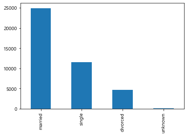
#2-1. 가로막대그래프 시각화
marital.plot.barh()
plt.show()
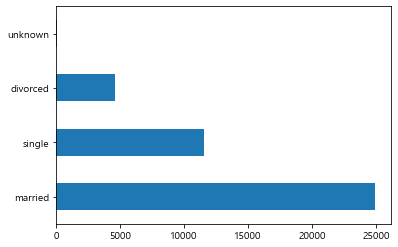
df['education'].unique()
array(['basic.4y', 'high.school', 'basic.6y', 'basic.9y',
'professional.course', 'unknown', 'university.degree',
'illiterate'], dtype=object)
#education 가로막대그래프 한줄 코드
#value_counts(),plot.barh()
education=df['education'].value_counts()
education.plot.barh()
plt.show()
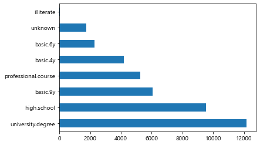
데이터 분석
분석주제 1 :
대출이 있는 사람이라면 은행 상품에 잘 가입하지 않을 것이다.
- 학습목표 :
- 가설검증과정 코딩 실습하기
- groupby활용한 실습 진행하기
- 분석을 위한 코딩과정 도식화
- 가입여부에 따라 가입한 그룹과 가입하지 않은 그룹으로 나눈다.
- 나뉜 데이터를 대출여부에 따라 나눈다.
- 가입한 그룹 중 대출이 있는 사람의 비중과, 가입하지 않은 그룹 중 대출이 있는 사람의 비중을 비교한다.
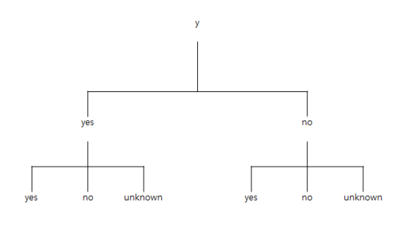
# 1. 가입여부에 따라 가입한 그룹과 가입하지 않은 그룹으로 나눈다.
#가입여부에 대한 칼럼 : 'y'
#unique()
df['y'].unique()
#groupby사용 - yes, no그룹으로 나뉘게 됨
array(['no', 'yes'], dtype=object)
# 1. 가입여부에 따라 가입한 그룹과 가입하지 않은 그룹으로 나눈다.
#groupby('y')
grouped=df.groupby('y')
# 1. 가입여부에 따라 가입한 그룹과 가입하지 않은 그룹으로 나눈다.
#get_group('yes') - y칼럼이 'yes'인 데이터프레임 추출 - 가입한 그룹만 추출
#get_group('no') - y칼럼이 'no'인 데이터프레임 추출 - 가입하지 않은 그룹만 추출
yes_group=grouped.get_group('yes')
no_group=grouped.get_group('no')
# 1. 가입여부에 따라 가입한 그룹과 가입하지 않은 그룹으로 나눈다.
#yes_group 출력
yes_group.head()
| age | job | marital | education | default | housing | loan | contact | month | day_of_week | ... | campaign | pdays | previous | poutcome | emp.var.rate | cons.price.idx | cons.conf.idx | euribor3m | nr.employed | y | |
|---|---|---|---|---|---|---|---|---|---|---|---|---|---|---|---|---|---|---|---|---|---|
| 75 | 41 | blue-collar | divorced | basic.4y | unknown | yes | no | telephone | may | mon | ... | 1 | 999 | 0 | nonexistent | 1.1 | 93.994 | -36.4 | 4.857 | 5191.0 | yes |
| 83 | 49 | entrepreneur | married | university.degree | unknown | yes | no | telephone | may | mon | ... | 1 | 999 | 0 | nonexistent | 1.1 | 93.994 | -36.4 | 4.857 | 5191.0 | yes |
| 88 | 49 | technician | married | basic.9y | no | no | no | telephone | may | mon | ... | 1 | 999 | 0 | nonexistent | 1.1 | 93.994 | -36.4 | 4.857 | 5191.0 | yes |
| 129 | 41 | technician | married | professional.course | unknown | yes | no | telephone | may | mon | ... | 1 | 999 | 0 | nonexistent | 1.1 | 93.994 | -36.4 | 4.857 | 5191.0 | yes |
| 139 | 45 | blue-collar | married | basic.9y | unknown | yes | no | telephone | may | mon | ... | 1 | 999 | 0 | nonexistent | 1.1 | 93.994 | -36.4 | 4.857 | 5191.0 | yes |
5 rows × 21 columns
# 1-3. 가입여부에 따라 가입한 그룹과 가입하지 않은 그룹으로 나눈다.
#no_group 출력
no_group.head()
| age | job | marital | education | default | housing | loan | contact | month | day_of_week | ... | campaign | pdays | previous | poutcome | emp.var.rate | cons.price.idx | cons.conf.idx | euribor3m | nr.employed | y | |
|---|---|---|---|---|---|---|---|---|---|---|---|---|---|---|---|---|---|---|---|---|---|
| 0 | 56 | housemaid | married | basic.4y | no | no | no | telephone | may | mon | ... | 1 | 999 | 0 | nonexistent | 1.1 | 93.994 | -36.4 | 4.857 | 5191.0 | no |
| 1 | 57 | services | married | high.school | unknown | no | no | telephone | may | mon | ... | 1 | 999 | 0 | nonexistent | 1.1 | 93.994 | -36.4 | 4.857 | 5191.0 | no |
| 2 | 37 | services | married | high.school | no | yes | no | telephone | may | mon | ... | 1 | 999 | 0 | nonexistent | 1.1 | 93.994 | -36.4 | 4.857 | 5191.0 | no |
| 3 | 40 | admin. | married | basic.6y | no | no | no | telephone | may | mon | ... | 1 | 999 | 0 | nonexistent | 1.1 | 93.994 | -36.4 | 4.857 | 5191.0 | no |
| 4 | 56 | services | married | high.school | no | no | yes | telephone | may | mon | ... | 1 | 999 | 0 | nonexistent | 1.1 | 93.994 | -36.4 | 4.857 | 5191.0 | no |
5 rows × 21 columns
#2. 나뉜 데이터(yes_group,no_group)를 대출여부(loan)에 따라 나눈다.
#value_counts
yes=yes_group['loan'].value_counts()
#yes변수 출력
yes
#yes_group의 대출여부 빈도 출력
no 3850
yes 683
unknown 107
Name: loan, dtype: int64
#2. 나뉜 데이터(yes_group,no_group)를 대출여부(loan)에 따라 나눈다.
#value_counts
no=no_group['loan'].value_counts()
#no변수 출력
no
#no_group의 대출여부 빈도 출력
no 30100
yes 5565
unknown 883
Name: loan, dtype: int64
#3. 가입한 그룹 내 대출이 있는 사람의 비중과, 가입하지 않은 그룹 내 대출이 있는 사람의 비중을 비교한다(yes_group).
#비중 : 시리즈 변수 각각의 value를 시리즈의 총합으로 나눔
#시리즈는 산술연산자(+,-,*,/,%,**,//)와 함께 사용가능
#series/series.sum()
yes=yes/yes.sum()
#yes 출력
yes
no 0.829741
yes 0.147198
unknown 0.023060
Name: loan, dtype: float64
#3. 가입한 그룹 내 대출이 있는 사람의 비중과, 가입하지 않은 그룹 내 대출이 있는 사람의 비중을 비교한다(no_group).
no=no/no.sum()
#no 출력
no
no 0.823574
yes 0.152266
unknown 0.024160
Name: loan, dtype: float64
#3. 가입한 그룹 중 대출이 있는 사람의 비중과, 가입하지 않은 그룹 중 대출이 있는 사람의 비중을 비교한다.
#concat : 시리즈 혹은 데이터프레임 결합(default-행방향 결합)
pd.concat([yes,no],axis=1)# column 합치기
#칼럼명이 모두 loan
| loan | loan | |
|---|---|---|
| no | 0.829741 | 0.823574 |
| yes | 0.147198 | 0.152266 |
| unknown | 0.023060 | 0.024160 |
#series.name : 시리즈의 이름 설정
yes.name='y_yes'
#series.name : 시리즈의 이름 설정
no.name='y_no'
pd.concat([yes,no],axis=1)
#=> 가입한 그룹의 대출 비중이 가입하지 않은 그룹보다 0.005 더 적다.
| y_yes | y_no | |
|---|---|---|
| no | 0.829741 | 0.823574 |
| yes | 0.147198 | 0.152266 |
| unknown | 0.023060 | 0.024160 |
분석주제 2 :
같은 상품을 새로운 고객에게 마케팅 하려고한다.
연령과 상품가입여부, 직업을 함께 고려할때 마케팅 전략을 변화시켜야 할 그룹은?
- 학습목표 :
- 가설검증과정 코딩 실습하기
- pivot_table활용한 실습 진행하기
- 분석조건 : 세 개의 칼럼(age, job, y)을 함께 분석해야 함
- pd.pivot_table(‘데이터프레임 변수’,values=집계 대상 칼럼(수치 데이터), index=행 인덱스가 될 칼럼명, columns=열 인덱스가 될 칼럼명, aggfunc=집계함수-sum,mean,min,max,std,var)
pivot_table 사용예제
#pd.pivot_table('데이터프레임 변수',values=집계 대상 칼럼, index=행 인덱스가 될 칼럼명, columns=열 인덱스가 될 칼럼명, aggfunc=sum)
pd.pivot_table(df,values='age',index='y',columns='job',aggfunc='mean')
| job | admin. | blue-collar | entrepreneur | housemaid | management | retired | self-employed | services | student | technician | unemployed | unknown |
|---|---|---|---|---|---|---|---|---|---|---|---|---|
| y | ||||||||||||
| no | 38.219846 | 39.582057 | 41.703453 | 44.705451 | 42.309707 | 59.926128 | 40.176887 | 38.090236 | 26.396667 | 38.600033 | 39.844828 | 45.375427 |
| yes | 37.968935 | 39.200627 | 41.935484 | 52.650943 | 42.783537 | 68.253456 | 38.006711 | 36.077399 | 24.800000 | 37.746575 | 39.062500 | 47.054054 |
#values,index,columns파라미터를 일일이 쓰지 않고 순서대로 입력하여 실행 가능
pd.pivot_table(df,'age','y','job',aggfunc='mean')
| job | admin. | blue-collar | entrepreneur | housemaid | management | retired | self-employed | services | student | technician | unemployed | unknown |
|---|---|---|---|---|---|---|---|---|---|---|---|---|
| y | ||||||||||||
| no | 38.219846 | 39.582057 | 41.703453 | 44.705451 | 42.309707 | 59.926128 | 40.176887 | 38.090236 | 26.396667 | 38.600033 | 39.844828 | 45.375427 |
| yes | 37.968935 | 39.200627 | 41.935484 | 52.650943 | 42.783537 | 68.253456 | 38.006711 | 36.077399 | 24.800000 | 37.746575 | 39.062500 | 47.054054 |
#멀티 인덱스(multi-index) - 행 인덱스
#['y','marital']
pd.pivot_table(df,'age',['y','marital'],'job',aggfunc='mean')
| job | admin. | blue-collar | entrepreneur | housemaid | management | retired | self-employed | services | student | technician | unemployed | unknown | |
|---|---|---|---|---|---|---|---|---|---|---|---|---|---|
| y | marital | ||||||||||||
| no | divorced | 43.098432 | 42.903704 | 44.042424 | 48.806897 | 46.123288 | 61.480469 | 42.871795 | 41.991984 | 34.500000 | 42.173484 | 42.140351 | 43.300000 |
| married | 40.148663 | 40.857804 | 42.477111 | 44.849218 | 43.634997 | 60.019048 | 42.349148 | 39.992951 | 30.484848 | 40.686245 | 41.636861 | 47.532110 | |
| single | 33.858265 | 33.409255 | 35.472527 | 38.087379 | 34.070776 | 53.938272 | 33.783537 | 32.159921 | 26.062500 | 33.950697 | 33.536946 | 38.288136 | |
| unknown | 34.666667 | 42.818182 | 35.500000 | 40.000000 | 51.000000 | 59.750000 | 39.400000 | 40.000000 | 30.000000 | 33.300000 | 47.200000 | 40.166667 | |
| yes | divorced | 44.878788 | 42.037736 | 44.857143 | 57.000000 | 46.692308 | 72.739130 | 41.875000 | 43.484848 | 35.666667 | 40.738462 | 47.900000 | 76.333333 |
| married | 41.386503 | 41.363420 | 43.090909 | 54.256757 | 44.756637 | 67.033435 | 41.036585 | 38.379518 | 31.250000 | 41.398438 | 41.941860 | 58.750000 | |
| single | 32.404594 | 32.652174 | 35.666667 | 40.875000 | 33.285714 | 67.500000 | 31.921569 | 31.024194 | 24.481061 | 32.078853 | 32.062500 | 30.000000 | |
| unknown | 42.500000 | 37.000000 | 31.000000 | NaN | NaN | 66.000000 | NaN | NaN | NaN | 30.000000 | NaN | 40.666667 |
#멀티 인덱스(multi-index) - 열 인덱스
#['job','contact']
pd.pivot_table(df,'age',['y','marital'],['job','contact'],aggfunc='mean')
| job | admin. | blue-collar | entrepreneur | housemaid | management | ... | services | student | technician | unemployed | unknown | |||||||||||
|---|---|---|---|---|---|---|---|---|---|---|---|---|---|---|---|---|---|---|---|---|---|---|
| contact | cellular | telephone | cellular | telephone | cellular | telephone | cellular | telephone | cellular | telephone | ... | cellular | telephone | cellular | telephone | cellular | telephone | cellular | telephone | cellular | telephone | |
| y | marital | |||||||||||||||||||||
| no | divorced | 43.143639 | 43.019185 | 42.906907 | 42.900585 | 43.301887 | 45.372881 | 48.292683 | 49.476190 | 44.786164 | 47.721805 | ... | 42.028269 | 41.944444 | 36.000000 | 27.000000 | 42.069034 | 42.435644 | 42.253731 | 41.978723 | 46.000000 | 40.600000 |
| married | 40.349554 | 39.800357 | 41.182477 | 40.494249 | 42.213628 | 42.802273 | 45.900966 | 43.342561 | 43.740678 | 43.452416 | ... | 40.483733 | 39.395833 | 32.150000 | 27.923077 | 40.283568 | 41.365495 | 41.452769 | 41.871369 | 48.349057 | 46.758929 | |
| single | 33.515821 | 34.646707 | 32.872838 | 34.183554 | 36.181034 | 34.227273 | 36.827586 | 39.711111 | 33.747405 | 34.697987 | ... | 32.360927 | 31.863081 | 25.396509 | 27.742138 | 33.529248 | 35.008741 | 33.252101 | 33.940476 | 39.535714 | 37.161290 | |
| unknown | 35.000000 | 31.000000 | 43.800000 | 42.000000 | 40.000000 | 31.000000 | 40.000000 | NaN | NaN | 51.000000 | ... | 34.500000 | 42.750000 | 30.000000 | NaN | 30.285714 | 40.333333 | 46.500000 | 50.000000 | 48.333333 | 32.000000 | |
| yes | divorced | 45.028302 | 44.269231 | 41.500000 | 43.400000 | 45.333333 | 44.000000 | 59.857143 | 37.000000 | 46.297297 | 54.000000 | ... | 43.083333 | 44.555556 | 35.666667 | NaN | 40.701754 | 41.000000 | 51.000000 | 40.666667 | 76.333333 | NaN |
| married | 41.362832 | 41.540230 | 41.682432 | 40.608000 | 44.177419 | 40.500000 | 55.375000 | 50.777778 | 45.401099 | 42.090909 | ... | 38.634921 | 37.575000 | 30.333333 | 34.000000 | 41.299065 | 41.904762 | 42.746479 | 38.133333 | 58.181818 | 60.000000 | |
| single | 32.117284 | 34.150000 | 31.934426 | 34.897436 | 35.117647 | 38.000000 | 40.769231 | 41.333333 | 32.763636 | 36.875000 | ... | 30.846154 | 31.950000 | 24.174468 | 26.965517 | 31.995902 | 32.657143 | 32.355556 | 27.666667 | 31.000000 | 28.000000 | |
| unknown | 42.500000 | NaN | 37.000000 | NaN | 31.000000 | NaN | NaN | NaN | NaN | NaN | ... | NaN | NaN | NaN | NaN | 30.000000 | NaN | NaN | NaN | 45.000000 | 32.000000 | |
8 rows × 24 columns
#fill-value - 결측치 대체
#fill_value=0
pd.pivot_table(df,'age',['y','marital'],['job','contact'],aggfunc='mean',fill_value=0)
| job | admin. | blue-collar | entrepreneur | housemaid | management | ... | services | student | technician | unemployed | unknown | |||||||||||
|---|---|---|---|---|---|---|---|---|---|---|---|---|---|---|---|---|---|---|---|---|---|---|
| contact | cellular | telephone | cellular | telephone | cellular | telephone | cellular | telephone | cellular | telephone | ... | cellular | telephone | cellular | telephone | cellular | telephone | cellular | telephone | cellular | telephone | |
| y | marital | |||||||||||||||||||||
| no | divorced | 43.143639 | 43.019185 | 42.906907 | 42.900585 | 43.301887 | 45.372881 | 48.292683 | 49.476190 | 44.786164 | 47.721805 | ... | 42.028269 | 41.944444 | 36.000000 | 27.000000 | 42.069034 | 42.435644 | 42.253731 | 41.978723 | 46.000000 | 40.600000 |
| married | 40.349554 | 39.800357 | 41.182477 | 40.494249 | 42.213628 | 42.802273 | 45.900966 | 43.342561 | 43.740678 | 43.452416 | ... | 40.483733 | 39.395833 | 32.150000 | 27.923077 | 40.283568 | 41.365495 | 41.452769 | 41.871369 | 48.349057 | 46.758929 | |
| single | 33.515821 | 34.646707 | 32.872838 | 34.183554 | 36.181034 | 34.227273 | 36.827586 | 39.711111 | 33.747405 | 34.697987 | ... | 32.360927 | 31.863081 | 25.396509 | 27.742138 | 33.529248 | 35.008741 | 33.252101 | 33.940476 | 39.535714 | 37.161290 | |
| unknown | 35.000000 | 31.000000 | 43.800000 | 42.000000 | 40.000000 | 31.000000 | 40.000000 | 0.000000 | 0.000000 | 51.000000 | ... | 34.500000 | 42.750000 | 30.000000 | 0.000000 | 30.285714 | 40.333333 | 46.500000 | 50.000000 | 48.333333 | 32.000000 | |
| yes | divorced | 45.028302 | 44.269231 | 41.500000 | 43.400000 | 45.333333 | 44.000000 | 59.857143 | 37.000000 | 46.297297 | 54.000000 | ... | 43.083333 | 44.555556 | 35.666667 | 0.000000 | 40.701754 | 41.000000 | 51.000000 | 40.666667 | 76.333333 | 0.000000 |
| married | 41.362832 | 41.540230 | 41.682432 | 40.608000 | 44.177419 | 40.500000 | 55.375000 | 50.777778 | 45.401099 | 42.090909 | ... | 38.634921 | 37.575000 | 30.333333 | 34.000000 | 41.299065 | 41.904762 | 42.746479 | 38.133333 | 58.181818 | 60.000000 | |
| single | 32.117284 | 34.150000 | 31.934426 | 34.897436 | 35.117647 | 38.000000 | 40.769231 | 41.333333 | 32.763636 | 36.875000 | ... | 30.846154 | 31.950000 | 24.174468 | 26.965517 | 31.995902 | 32.657143 | 32.355556 | 27.666667 | 31.000000 | 28.000000 | |
| unknown | 42.500000 | 0.000000 | 37.000000 | 0.000000 | 31.000000 | 0.000000 | 0.000000 | 0.000000 | 0.000000 | 0.000000 | ... | 0.000000 | 0.000000 | 0.000000 | 0.000000 | 30.000000 | 0.000000 | 0.000000 | 0.000000 | 45.000000 | 32.000000 | |
8 rows × 24 columns
pivot_table를 사용한 주제2 분석
같은 상품을 새로운 고객에게 마케팅 하려고한다.
연령과 상품가입여부, 직업을 함께 고려할때 마케팅 전략을 변화시켜야 할 그룹은?
#pivot_table
pivot=pd.pivot_table(df,values='age',index='y',columns='job',aggfunc='mean')
#pivot 변수 출력
pivot
| job | admin. | blue-collar | entrepreneur | housemaid | management | retired | self-employed | services | student | technician | unemployed | unknown |
|---|---|---|---|---|---|---|---|---|---|---|---|---|
| y | ||||||||||||
| no | 38.219846 | 39.582057 | 41.703453 | 44.705451 | 42.309707 | 59.926128 | 40.176887 | 38.090236 | 26.396667 | 38.600033 | 39.844828 | 45.375427 |
| yes | 37.968935 | 39.200627 | 41.935484 | 52.650943 | 42.783537 | 68.253456 | 38.006711 | 36.077399 | 24.800000 | 37.746575 | 39.062500 | 47.054054 |
#yes행과 no행의 차 연산(loc인덱서 사용)
pivot.loc['yes']-pivot.loc['no']
job
admin. -0.250911
blue-collar -0.381430
entrepreneur 0.232030
housemaid 7.945493
management 0.473829
retired 8.327329
self-employed -2.170175
services -2.012836
student -1.596667
technician -0.853458
unemployed -0.782328
unknown 1.678627
dtype: float64
#diff행 생성(yes행과 no행의 차)
pivot.loc['diff']=pivot.loc['yes']-pivot.loc['no']
#pivot 변수 출력
pivot
| job | admin. | blue-collar | entrepreneur | housemaid | management | retired | self-employed | services | student | technician | unemployed | unknown |
|---|---|---|---|---|---|---|---|---|---|---|---|---|
| y | ||||||||||||
| no | 38.219846 | 39.582057 | 41.703453 | 44.705451 | 42.309707 | 59.926128 | 40.176887 | 38.090236 | 26.396667 | 38.600033 | 39.844828 | 45.375427 |
| yes | 37.968935 | 39.200627 | 41.935484 | 52.650943 | 42.783537 | 68.253456 | 38.006711 | 36.077399 | 24.800000 | 37.746575 | 39.062500 | 47.054054 |
| diff | -0.250911 | -0.381430 | 0.232030 | 7.945493 | 0.473829 | 8.327329 | -2.170175 | -2.012836 | -1.596667 | -0.853458 | -0.782328 | 1.678627 |
#diff 기준으로 내림차순 정렬
#sort_values() - default : 열 기준 오름차순 정렬
#axis=1,ascending=False : 행 기준 내림차순 정렬
#axis=1 안넣어주면 오류 발생
result=pivot.sort_values('diff',axis=1,ascending=False)
#result 출력
result
| job | retired | housemaid | unknown | management | entrepreneur | admin. | blue-collar | unemployed | technician | student | services | self-employed |
|---|---|---|---|---|---|---|---|---|---|---|---|---|
| y | ||||||||||||
| no | 59.926128 | 44.705451 | 45.375427 | 42.309707 | 41.703453 | 38.219846 | 39.582057 | 39.844828 | 38.600033 | 26.396667 | 38.090236 | 40.176887 |
| yes | 68.253456 | 52.650943 | 47.054054 | 42.783537 | 41.935484 | 37.968935 | 39.200627 | 39.062500 | 37.746575 | 24.800000 | 36.077399 | 38.006711 |
| diff | 8.327329 | 7.945493 | 1.678627 | 0.473829 | 0.232030 | -0.250911 | -0.381430 | -0.782328 | -0.853458 | -1.596667 | -2.012836 | -2.170175 |
#result의 diff행 막대그래프 시각화
result.loc['diff'].plot.bar()
plt.show()
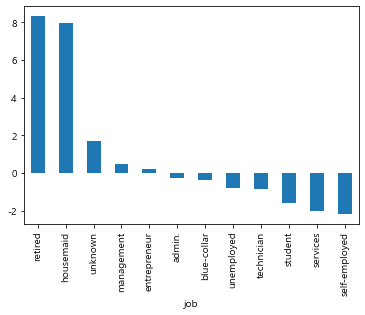
#result의 diff행 막대그래프 시각화
#figsize=[15,10]
#title('주제2 시각화',fontsize=20)
#x축 눈금 - fontsize=16,rotation=45
#y축 눈금 - fontsize=16)
#xlabel - 'job',fontsize=16
#ylabel - 'diff',fontsize=16
result.loc['diff'].plot.bar(figsize=[15,10])
plt.title('주제2 시각화',fontsize=20)
plt.xticks(fontsize=16,rotation=45)
plt.yticks(fontsize=16)
plt.xlabel('job',fontsize=16)
plt.ylabel('diff',fontsize=16)
plt.show()
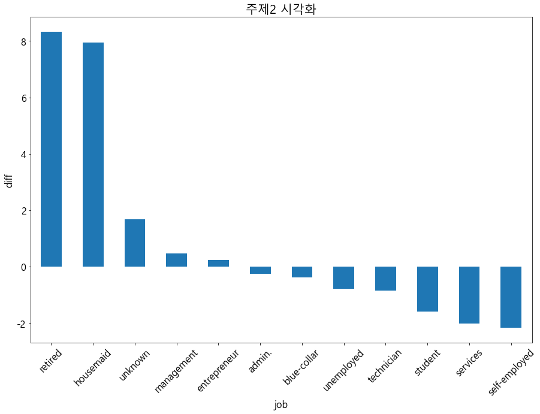
- 결론 - retired , housemaid 경우는 연령을 높여서 더욱 타겟팅 해야한다